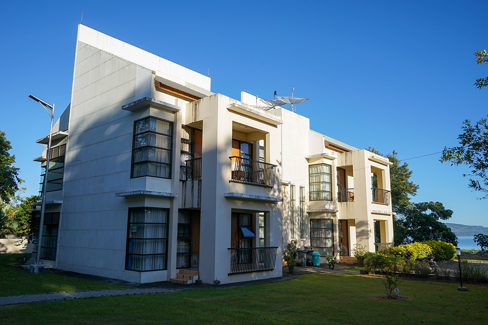

Fasilitas
| No | Fasilitas | Gambar | Teks |
|---|---|---|---|
| 1 | Laboratorium Komputer dan Bahasa |  |
Definisi Laboratorium Komputasi adalah ruangan yang dilabeli sebagai laboratorium komputasi yang berisi sekumpulan perangkat yang terdiri atas Komputer Desktop, Laptop, AC, projector, printer, dan perangkat lain sesuai dengan kebutuhan dari laboratorium yang dimaksud |
| 2 | Akomodasi Dosen |  | Institut Teknologi Del (IT Del) menyediakan fasilitas perumahan untuk dosen dan staf penunjang di lingkungan kampus. Dengan tinggal di lingkungan kampus, seluruh dosen dan staf bisa memberikan kontribusi terbaik untuk kelancaran dan kualitas proses akademis dan non-akademis di IT Del. Dengan lingkungan dan fasilitas yang ergonomis, diharapkan juga dosen bisa mengembangkan diri secara lebih maksimal. |
| 3 | Kantin |  |
Kantin Politeknik Informatika Del menyediakan menu makanan yang bergizi dan sehat untuk semua mahasiswa/i. Menu yang disediakan selalu memenuhi standard gizi, sehingga mahasiswa bisa melaksanakan aktifitas perkuliahan dengan sehat dan prima. Setiap mahasiswa diwajibkan untuk makan di kantin tiga kali setiap harinya. |
| 4 | Perpustakaan |  |
Perpustakaan IT Del memiliki visi yaitu “Sebagai pusat informasi terkemuka yang menyediakan layanan informasi cetak maupun cetak dan juga penyedia layanan informasi berteknologi tinggi. Untuk mencapai visi dimaksud, misi yang diemban oleh Perpustakaan |